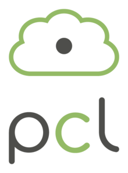

Point Cloud Library
| This is the current revision of this page, as edited by 129.26.242.68 (talk) at 12:01, 2 January 2018 (Added reference to 3D registration tutorial.). The present address (URL) is a permanent link to this version. |
This article may rely excessively on sources too closely associated with the subject, potentially preventing the article from being verifiable and neutral. (October 2014) (Learn how and when to remove this template message) |
|  | |
| Original author(s) | Willow Garage |
|---|---|
| Initial release | March 2010[1][2] |
| Stable release |
1.8.1
/ August 8, 2017[3] |
| Repository |
|
| Operating system | Cross-platform |
| Type | Library |
| License | BSD license |
| Website |
pointclouds |
{kind=link}
The Point Cloud Library (PCL) is an open-source library of algorithms for point cloud processing tasks and 3D geometry processing, such as occur in three-dimensional computer vision. The library contains algorithms for feature estimation, surface reconstruction, 3D registration[4], model fitting, and segmentation. It is written in C++ and released under the BSD license.
These algorithms have been used, for example, for perception in robotics to filter outliers from noisy data, stitch 3D point clouds together, segment relevant parts of a scene, extract keypoints and compute descriptors to recognize objects in the world based on their geometric appearance, and create surfaces from point clouds and visualize them.[5][not in citation given]
Contents
History[edit]
The development of the Point Cloud Library started in March 2010 at Willow Garage. The project initially resided on a sub domain of Willow Garage then moved to a new website www.pointclouds.org in March 2011.[1] PCL's first official release (Version 1.0) was released two months later in May 2011.[2]
Modules[edit]
PCL is split into a number of modular libraries.[6]
References[edit]
- ^ Jump up to: a b B. Rusu, Radu (28 March 2011). "PointClouds.org: A new home for Point Cloud Library (PCL)". Willow Garage. Retrieved 26 November 2012.
- ^ Jump up to: a b "PCL 1.0!". PCL. 12 May 2011. Retrieved 24 May 2013.
- Jump up ^ https://github.com/PointCloudLibrary/pcl/releases
- Jump up ^ Holz, Dirk; Ichim, Alexandru E.; Tombari, Federico; Rusu, Radu B.; Behnke, Sven (2015). "Registration with the Point Cloud Library: A Modular Framework for Aligning in 3-D". IEEE Robotics Automation Magazine. 22 (4): 110–124. doi:10.1109/MRA.2015.2432331.
- Jump up ^ Robot Operating System: http://www.ros.org/wiki
- Jump up ^ PCL documentation and tutorials: http://pointclouds.org/documentation/